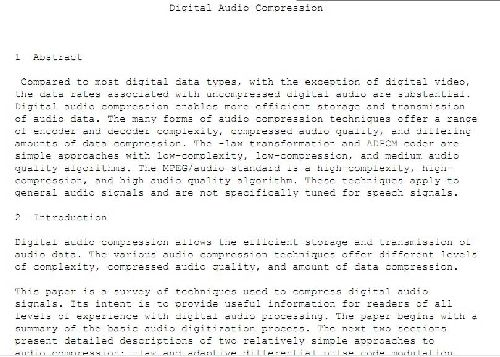

Pocetna
Literatura
Primjeri
Slične Stranice:

Digitalizacija i kompresija zvuka
Uvod
Digitalni zvuk - primjene
Audio signal
govor
glazba (i ostalo)
Telefonija
preko IP
integracija
bežični sustavi
Audio difuzija (broadcasting) (radio)
audio on demand
Audio konferencije
CD i DVD pohrana
video + pripadajući audio
1.Svojstva audio signala
2.Digitalizacija govora
3.Dinamički raspon ljudskog sluha
4.CD audio kodiranje
5.DVD audio kodiranje
6.Drugi audio standardi
7.Tehnike za kodiranje govora
8.MPEG-1 audio
9.MPEG-1 audio layers
Link na službenu web stranicu kolegija
Multimedijska tehnika
kolegiju možete pristupiti putem moodle-a
ovdje